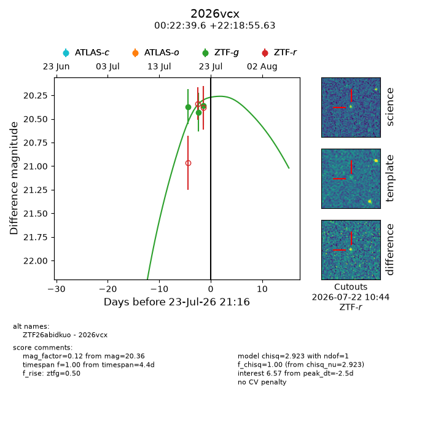
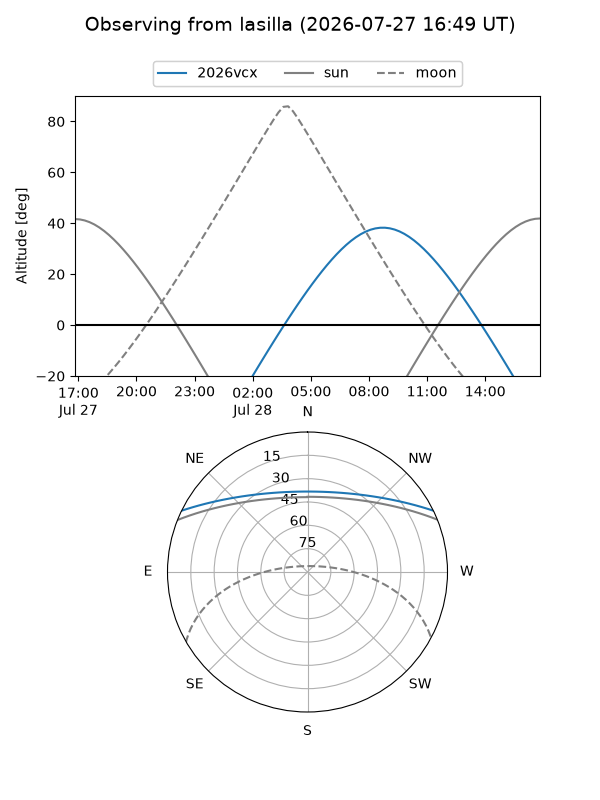
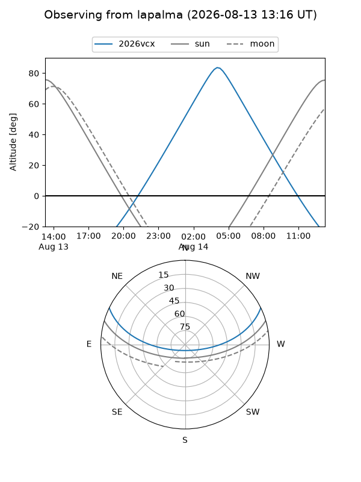
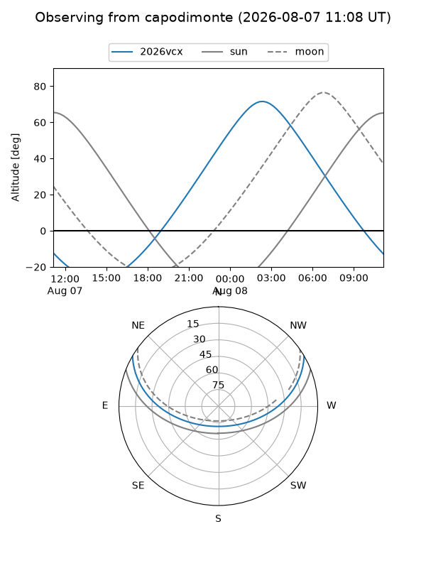
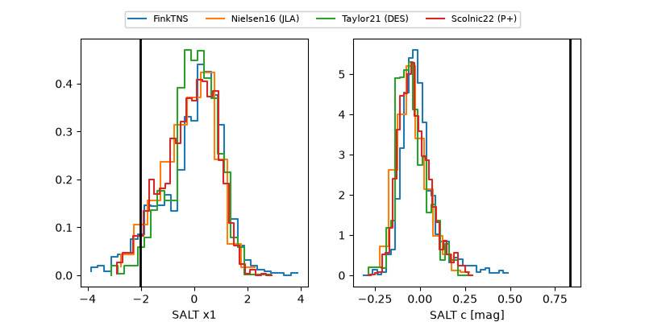

2026vcx
Target 2026vcx at 2026-07-23 21:19
Aliases and brokers:
FINK-ZTF: ztf.fink-portal.org/ZTF26abidkuo
Lasair-ZTF: lasair-ztf.lsst.ac.uk/objects/ZTF26abidkuo
ALeRCE-ZTF: alerce.online/object/ZTF26abidkuo
YSE-PZ: ziggy.ucolick.org/yse/transient_detail/2026vcx
TNS name: wis-tns.org/object/2026vcx
Direct TNS query: direct search
alt names
ZTF26abidkuo (ztf,fink_ztf)
2026vcx (tns,yse)
Coordinates:
equatorial (ra, dec) = 5.6651,+22.31545
equatorial (HMS+DMS) = 00:22:39.64,+22:18:55.63
galactic (l, b) = (114.2243,-40.06924)
Flags:
TNS type: nan
peak dt: -2.5
Photometry:
last ztfg=20.36
3 ztfg detections
Lightcurve

Visibility



Additional plots
